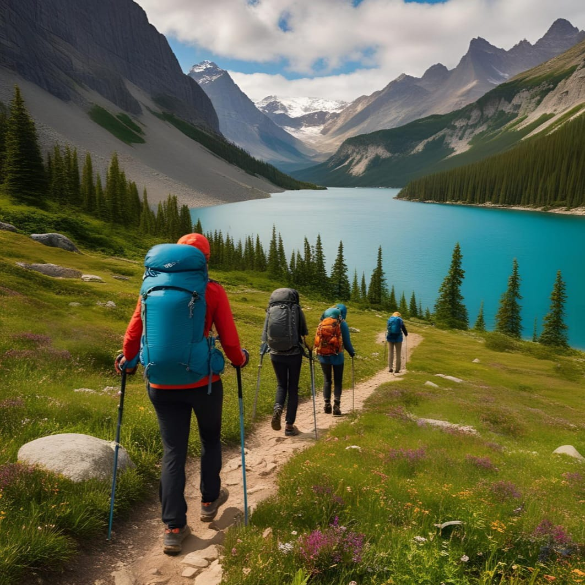

Aventuri în natură
Natura ne oferă un spectacol continuu, o sursă inepuizabilă de energie și liniște interioară. Aventurile în aer liber sunt ocazia perfectă de a ne reconecta cu lumea naturală, de a ne testa limitele și de a descoperi peisaje care îți taie respirația. Fie că este vorba de drumeții montane, camping, alpinism, rafting sau simple plimbări prin păduri, fiecare experiență este unică și transformatoare.
În România, Carpații oferă trasee spectaculoase pentru toate nivelurile de pregătire. Munții Bucegi, Făgăraș sau Retezat ascund lacuri glaciare, poteci sinuoase și vârfuri impunătoare. Pentru cei care preferă liniștea apelor, Delta Dunării este o destinație fascinantă unde natura este la ea acasă. Observarea păsărilor, plimbările cu barca și nopțile petrecute sub cerul înstelat sunt doar câteva dintre momentele magice ce pot fi trăite aici.
La nivel internațional, parcurile naționale precum Yosemite (SUA), Banff (Canada), Torres del Paine (Chile) sau Aoraki / Mount Cook (Noua Zeelandă) atrag anual milioane de turiști dornici de aventură. Aceste locații sunt ideale pentru a practica activități în aer liber în condiții de siguranță și cu infrastructură bine pusă la punct.
Înainte de a pleca într-o aventură în natură, este important să te documentezi: află despre vreme, echipamentul necesar, traseele disponibile și regulile de protecție a mediului. Respectarea naturii este esențială pentru ca generațiile viitoare să se poată bucura de aceleași priveliști uimitoare.
Împachetarea corectă, hidratarea, protecția solară și spiritul de echipă sunt câteva dintre elementele care pot face diferența între o experiență plăcută și una dificilă. De asemenea, nu uita să îți încarci telefonul și să ai la tine o hartă fizică, mai ales în zone fără semnal.
Așadar, dacă simți chemarea muntelui, a pădurii sau a apelor, nu ezita. Planifică-ți următoarea escapadă în natură și bucură-te de tot ceea ce planeta noastră are de oferit. Lumea este un loc incredibil – ieși afară și exploreaz-o!